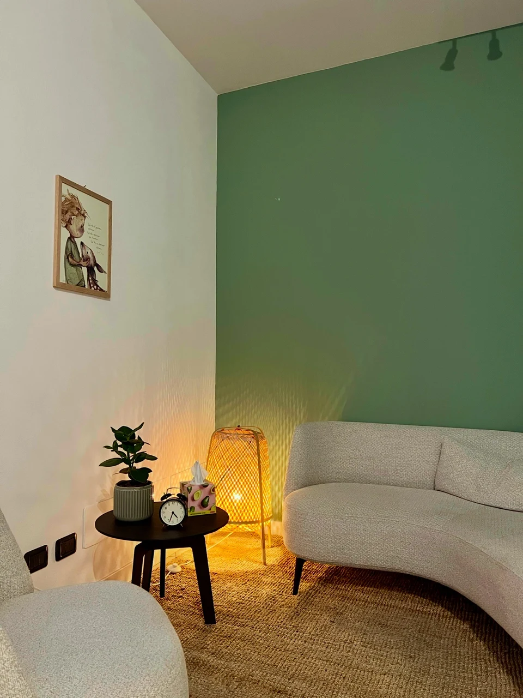

In studio a Cantù
La Corte dei Calzini SpaiatiCantù (CO)
Gli incontri si svolgono su appuntamento. Per informazioni su come raggiungere lo studio puoi scrivermi prima di venire.
Contatti per lo studioGli incontri
In studio a Cantù e, su appuntamento, online.
Gli incontri si svolgono su appuntamento. Per informazioni su come raggiungere lo studio puoi scrivermi prima di venire.
Contatti per lo studio
Se preferisci un colloquio a distanza, indicamelo al primo contatto. Concordiamo insieme se questa modalità è adatta alla richiesta e come organizzare l’incontro.
Per il colloquio online ti serviranno una connessione stabile e uno spazio in cui poter parlare con riservatezza.
Contattami